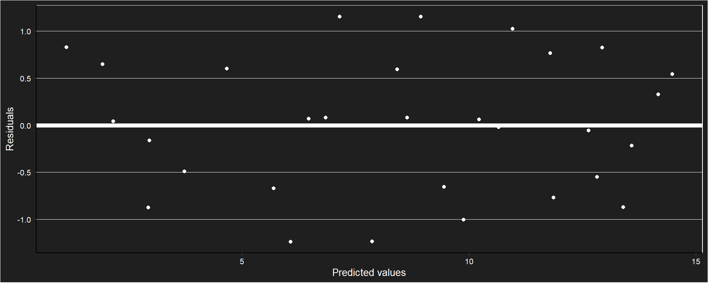
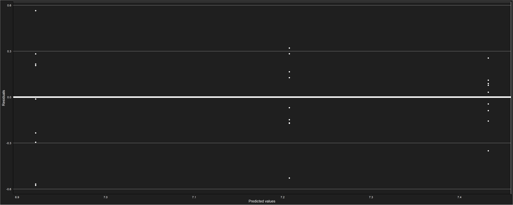
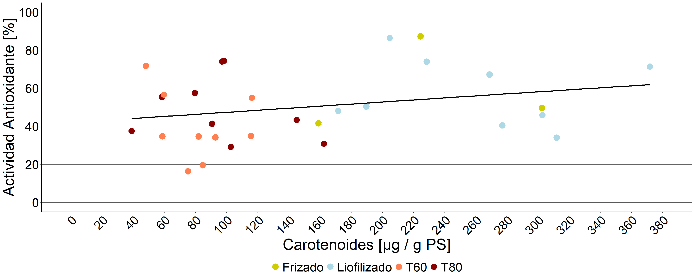

Tratamientos de secado
Cambios en el peso
Tabla descriptiva
## # A tibble: 14 × 5
## # Groups: Temperatura [2]
## Temperatura Hora n Mean sd
## <fct> <fct> <int> <dbl> <dbl>
## 1 60 0 3 20.4 0.246
## 2 60 1 3 14.0 1.31
## 3 60 2 3 12.5 1.34
## 4 60 3 3 10.5 1.56
## 5 60 4 3 8.48 1.74
## 6 60 5 3 6.69 1.75
## 7 60 6 3 4.97 1.59
## 8 60 7 3 2.52 0.482
## 9 80 0 3 19.7 0.401
## 10 80 1 3 12.7 0.572
## 11 80 2 3 9.37 0.804
## 12 80 3 3 5.61 0.810
## 13 80 4 3 2.88 0.336
## 14 80 5 3 2.08 0.124Gráfico de medias con desvío estándar

Gráfico de líneas de tendencia medias y valores puntuales

Correlación de cada unidad observacional en el tiempo
## 0 1 2 3 4 5
## 0 1.00 0.82 0.92 0.90 0.88 0.86
## 1 0.82 1.00 0.91 0.86 0.83 0.84
## 2 0.92 0.91 1.00 0.99 0.97 0.96
## 3 0.90 0.86 0.99 1.00 0.99 0.98
## 4 0.88 0.83 0.97 0.99 1.00 1.00
## 5 0.86 0.84 0.96 0.98 1.00 1.00Matriz de covarianzas
## 0 1 2 3 4 5
## 0 0.24 0.46 0.88 1.28 1.40 1.15
## 1 0.46 1.32 2.06 2.86 3.12 2.67
## 2 0.88 2.06 3.88 5.66 6.26 5.23
## 3 1.28 2.86 5.66 8.41 9.40 7.84
## 4 1.40 3.12 6.26 9.40 10.69 8.98
## 5 1.15 2.67 5.23 7.84 8.98 7.61Modelo marginal. Estructura autoregresiva de orden 1
## gls(model = Peso ~ Hora * Temperatura + basal, data = datospeso2w,
## correlation = corAR1(form = ~1 | Repeticion))Comprobación de supuestos


##
## Shapiro-Wilk normality test
##
## data: e
## W = 0.95582, p-value = 0.2414Coeficientes del modelo
## (Intercept) Hora2 Hora3 Hora4
## -31.996552 -1.539667 -3.514333 -5.533000
## Hora5 Temperatura80 basal Hora2:Temperatura80
## -7.323000 0.298695 2.255026 -1.825333
## Hora3:Temperatura80 Hora4:Temperatura80 Hora5:Temperatura80
## -3.605333 -4.321000 -3.329333Anova
## Denom. DF: 19
## numDF F-value p-value
## (Intercept) 1 3275.930 <.0001
## Hora 4 124.495 <.0001
## Temperatura 1 120.000 <.0001
## basal 1 13.072 0.0018
## Hora:Temperatura 4 4.952 0.0066Efectos simples
## $emmeans
## Hora = 1:
## Temperatura emmean SE df lower.CL upper.CL
## 60 13.223486 0.5576531 17.31 12.048544 14.398428
## 80 13.522181 0.5576531 17.31 12.347239 14.697123
##
## Hora = 2:
## Temperatura emmean SE df lower.CL upper.CL
## 60 11.683819 0.5576531 17.31 10.508877 12.858761
## 80 10.157181 0.5576531 17.31 8.982239 11.332123
##
## Hora = 3:
## Temperatura emmean SE df lower.CL upper.CL
## 60 9.709153 0.5576531 17.31 8.534210 10.884095
## 80 6.402514 0.5576531 17.31 5.227572 7.577456
##
## Hora = 4:
## Temperatura emmean SE df lower.CL upper.CL
## 60 7.690486 0.5576531 17.31 6.515544 8.865428
## 80 3.668181 0.5576531 17.31 2.493239 4.843123
##
## Hora = 5:
## Temperatura emmean SE df lower.CL upper.CL
## 60 5.900486 0.5576531 17.31 4.725544 7.075428
## 80 2.869847 0.5576531 17.31 1.694905 4.044790
##
## Degrees-of-freedom method: appx-satterthwaite
## Confidence level used: 0.95
##
## $contrasts
## Hora = 1:
## contrast estimate SE df t.ratio p.value
## Temperatura60 - Temperatura80 -0.298695 0.877104 9.63 -0.341 0.7408
##
## Hora = 2:
## contrast estimate SE df t.ratio p.value
## Temperatura60 - Temperatura80 1.526638 0.877104 9.63 1.741 0.1135
##
## Hora = 3:
## contrast estimate SE df t.ratio p.value
## Temperatura60 - Temperatura80 3.306638 0.877104 9.63 3.770 0.0039
##
## Hora = 4:
## contrast estimate SE df t.ratio p.value
## Temperatura60 - Temperatura80 4.022305 0.877104 9.63 4.586 0.0011
##
## Hora = 5:
## contrast estimate SE df t.ratio p.value
## Temperatura60 - Temperatura80 3.030638 0.877104 9.63 3.455 0.0065
##
## Degrees-of-freedom method: appx-satterthwaiteGráfico de comparaciones

Modelo

Actividad antioxidante
Ubajay
Modelo
## Formula: aao/100 ~ Tratamiento + (1 | Concentracion) + (1 | Dia)
## Data: datosaao_uba
## AIC BIC logLik df.resid
## -123.32527 -108.95858 67.66264 75
## Random-effects (co)variances:
##
## Conditional model:
## Groups Name Std.Dev.
## Concentracion (Intercept) 0.6850
## Dia (Intercept) 0.4892
##
## Number of obs: 81 / Conditional model: Concentracion, 3; Dia, 3
##
## Dispersion parameter for beta family (): 18.5
##
## Fixed Effects:
##
## Conditional model:
## (Intercept) TratamientoT60 TratamientoT80
## -0.5632 -0.6492 -0.2783Verificación de supuestos

Anova
## Analysis of Deviance Table (Type II Wald chisquare tests)
##
## Response: aao/100
## Chisq Df Pr(>Chisq)
## Tratamiento 21.27 2 2.407e-05 ***
## ---
## Signif. codes: 0 '***' 0.001 '**' 0.01 '*' 0.05 '.' 0.1 ' ' 1Comparaciones a posteriori
## $emmeans
## Tratamiento response SE df asymp.LCL asymp.UCL
## Liofilizado 0.3628177 0.11444316 Inf 0.1774953 0.6003922
## T60 0.2292810 0.08795238 Inf 0.1008437 0.4410588
## T80 0.3012312 0.10435800 Inf 0.1402566 0.5325231
##
## Confidence level used: 0.95
## Intervals are back-transformed from the logit scale
##
## $contrasts
## contrast odds.ratio SE df asymp.LCL asymp.UCL
## Liofilizado / T60 1.9140479 0.2694818 Inf 1.3760913 2.6623084
## Liofilizado / T80 1.3208649 0.1777831 Inf 0.9635163 1.8107469
## T60 / T80 0.6900898 0.0984971 Inf 0.4938853 0.9642398
##
## Confidence level used: 0.95
## Conf-level adjustment: tukey method for comparing a family of 3 estimates
## Intervals are back-transformed from the log odds ratio scale

Calafate

Modelo
## Formula: aao/100 ~ Tratamiento + (1 | Concentracion) + (1 | Dia)
## Data: tabla_sec_cal_aao_2
## AIC BIC logLik df.resid
## -119.08998 -104.72329 65.54499 75
## Random-effects (co)variances:
##
## Conditional model:
## Groups Name Std.Dev.
## Concentracion (Intercept) 1.0758
## Dia (Intercept) 0.4043
##
## Number of obs: 81 / Conditional model: Concentracion, 3; Dia, 3
##
## Dispersion parameter for beta family (): 11.8
##
## Fixed Effects:
##
## Conditional model:
## (Intercept) TratamientoT60 TratamientoT80
## 1.393 -1.443 -0.390Verificación de supuestos
Anova
## Analysis of Deviance Table (Type II Wald chisquare tests)
##
## Response: aao/100
## Chisq Df Pr(>Chisq)
## Tratamiento 69.347 2 8.738e-16 ***
## ---
## Signif. codes: 0 '***' 0.001 '**' 0.01 '*' 0.05 '.' 0.1 ' ' 1Comparaciones a posteriori
## $emmeans
## Tratamiento response SE df asymp.LCL asymp.UCL
## Liofilizado 0.8011113 0.1078233 Inf 0.5167202 0.9381735
## T60 0.4876685 0.1685291 Inf 0.2023963 0.7812067
## T80 0.7317074 0.1325895 Inf 0.4205630 0.9110941
##
## Confidence level used: 0.95
## Intervals are back-transformed from the logit scale
##
## $contrasts
## contrast odds.ratio SE df null z.ratio p.value
## Liofilizado / T60 4.231643 0.7619634 Inf 1 8.012 <.0001
## Liofilizado / T80 1.476910 0.2617043 Inf 1 2.201 0.0710
## T60 / T80 0.349016 0.0612584 Inf 1 -5.997 <.0001
##
## P value adjustment: tukey method for comparing a family of 3 estimates
## Tests are performed on the log odds ratio scale
Carotenoides

Modelo
Comprobación de supuestos
Anova del modelo
## Analysis of Deviance Table (Type II Wald chisquare tests)
##
## Response: b_car
## Chisq Df Pr(>Chisq)
## Tratamiento 93.613 2 < 2.2e-16 ***
## ---
## Signif. codes: 0 '***' 0.001 '**' 0.01 '*' 0.05 '.' 0.1 ' ' 1Comparaciones a posteriori
## $emmeans
## Tratamiento response SE df asymp.LCL asymp.UCL
## Liofilizado 258.20856 37.58095 Inf 194.12549 343.4462
## T60 79.45723 11.59641 Inf 59.69040 105.7700
## T80 95.20173 13.88891 Inf 71.52596 126.7144
##
## Confidence level used: 0.95
## Intervals are back-transformed from the log scale
##
## $contrasts
## contrast ratio SE df null z.ratio p.value
## Liofilizado / T60 3.249655 0.4265231 Inf 1 8.979 <.0001
## Liofilizado / T80 2.712225 0.3563188 Inf 1 7.595 <.0001
## T60 / T80 0.834620 0.1098443 Inf 1 -1.374 0.3548
##
## P value adjustment: tukey method for comparing a family of 3 estimates
## Tests are performed on the log scale
Antocianinas

Modelo
## Generalized linear mixed model fit by maximum likelihood (Laplace Approximation) [glmerMod
## ]
## Family: Gamma ( log )
## Formula: Antocianinas ~ Tratamiento + (1 | Dia)
## Data: datosanto2
## AIC BIC logLik deviance df.resid
## 406.3022 412.7814 -198.1511 396.3022 22
## Random effects:
## Groups Name Std.Dev.
## Dia (Intercept) 0.000
## Residual 0.271
## Number of obs: 27, groups: Dia, 3
## Fixed Effects:
## (Intercept) TratamientoT60 TratamientoT80
## 7.4327 -0.2250 -0.5117
## optimizer (Nelder_Mead) convergence code: 0 (OK) ; 0 optimizer warnings; 1 lme4 warningsVerificación de supuestos 
Anova
## Analysis of Deviance Table (Type II Wald chisquare tests)
##
## Response: Antocianinas
## Chisq Df Pr(>Chisq)
## Tratamiento 15.255 2 0.0004869 ***
## ---
## Signif. codes: 0 '***' 0.001 '**' 0.01 '*' 0.05 '.' 0.1 ' ' 1Comparaciones a posteriori
## $emmeans
## Tratamiento response SE df asymp.LCL asymp.UCL
## Liofilizado 1690.368 156.98916 Inf 1409.0545 2027.845
## T60 1349.826 125.36210 Inf 1125.1858 1619.314
## T80 1013.290 94.10709 Inf 844.6568 1215.590
##
## Confidence level used: 0.95
## Intervals are back-transformed from the log scale
##
## $contrasts
## contrast ratio SE df null z.ratio p.value
## Liofilizado / T60 1.252286 0.1644777 Inf 1 1.713 0.2003
## Liofilizado / T80 1.668198 0.2191043 Inf 1 3.896 0.0003
## T60 / T80 1.332122 0.1749635 Inf 1 2.183 0.0740
##
## P value adjustment: tukey method for comparing a family of 3 estimates
## Tests are performed on the log scale
Correlaciones
Ubajay
Modelo
## Formula: aao_mean/100 ~ b_car + (1 | Tratamiento)
## Data: secado_carotenoides3
## AIC BIC logLik df.resid
## -11.74856 -6.14377 9.87428 26
## Random-effects (co)variances:
##
## Conditional model:
## Groups Name Std.Dev.
## Tratamiento (Intercept) 7.853e-06
##
## Number of obs: 30 / Conditional model: Tratamiento, 4
##
## Dispersion parameter for beta family (): 6.88
##
## Fixed Effects:
##
## Conditional model:
## (Intercept) b_car
## -0.32335 0.00217Verificación de supuestos

Análisis de regresión
## Family: beta ( logit )
## Formula: aao_mean/100 ~ b_car + (1 | Tratamiento)
## Data: secado_carotenoides3
##
## AIC BIC logLik deviance df.resid
## -11.7 -6.1 9.9 -19.7 26
##
## Random effects:
##
## Conditional model:
## Groups Name Variance Std.Dev.
## Tratamiento (Intercept) 6.167e-11 7.853e-06
## Number of obs: 30, groups: Tratamiento, 4
##
## Dispersion parameter for beta family (): 6.88
##
## Conditional model:
## Estimate Std. Error z value Pr(>|z|)
## (Intercept) -0.323353 0.256126 -1.262 0.207
## b_car 0.002170 0.001452 1.495 0.135## [1] 0.2613721No existe evidencia para aceptar que beta1 difiere de cero (r = 0.261, valor p = 0.135)
Gráfico del modelo ajustado

Calafate
Modelo
## Formula: aao/100 ~ Antocianinas + (1 | Tratamiento)
## Data: correlaciones_cal
## AIC BIC logLik df.resid
## -19.94726 -14.34247 13.97363 26
## Random-effects (co)variances:
##
## Conditional model:
## Groups Name Std.Dev.
## Tratamiento (Intercept) 0.6865
##
## Number of obs: 30 / Conditional model: Tratamiento, 4
##
## Dispersion parameter for beta family (): 9.19
##
## Fixed Effects:
##
## Conditional model:
## (Intercept) Antocianinas
## 0.9656156 -0.0000848Verificación de supuestos
Anova
## Family: beta ( logit )
## Formula: aao/100 ~ Antocianinas + (1 | Tratamiento)
## Data: correlaciones_cal
##
## AIC BIC logLik deviance df.resid
## -19.9 -14.3 14.0 -27.9 26
##
## Random effects:
##
## Conditional model:
## Groups Name Variance Std.Dev.
## Tratamiento (Intercept) 0.4713 0.6865
## Number of obs: 30, groups: Tratamiento, 4
##
## Dispersion parameter for beta family (): 9.19
##
## Conditional model:
## Estimate Std. Error z value Pr(>|z|)
## (Intercept) 0.9656156 0.6272174 1.540 0.124
## Antocianinas -0.0000848 0.0003699 -0.229 0.819Correlación
## [1] 0.1502407No existe evidencia para aceptar que beta1 difiere de cero (r = 0.178, valor p = 0.502)
Gráfico del modelo ajustado